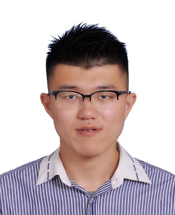

|
Jun Huo
|
 |
Master
School of Petroleum and Chemical Engineering,
Dalian University of Technology
Address: No.2 Linggong Road, Ganjingzi District, Dalian City, Liaoning Province, P.R.China
Phone: +86-15942499780
Email: huojun1993@mail.dlut.edu.cn
|
I am currently a final year master student (Expected graduation: Jun. 2019) in the School of Petroleum and Chemical Engineering from Dalian University of Technology, supervised by Prof. Ning Zhang and Prof. Gaohong He. My current research focuses on using molecular simulation to study polymer membrane and graphene membrane. Meanwhile, I taught myself machine learning by book, MOOC of China University, Coursera, training institute and so on.
Previously, I received the B. Eng degree from the College of Chemistry, Chemical Engineering and Environmental Engineering in Liaoning Shihua University in 2016.
Research Interests
Publications
* below indicates equal contribution
Molecular Dynamics Simulation on the Effect of Water Uptake on Hydrogen Bond Network for OH- Conduction in Imidazolium-g-PPO Membrane
Jun Huo, Wenxu Qi, Hongda Zhu, et al., International Journal of Hydrogen Energy, 2019, 44: 3760–3770. [PDF]
Understanding of Imidazolium Group Hydration and Polymer Structure for Hydroxide Anion Conduction in Hydrated Imidazolium-g-PPO Membrane by Molecular Dynamics Simulations
Ning Zhang*, Jun Huo*, Boyun Yang, et al., Chemical Engineering Science, 2018, 192: 1167–1176. [PDF]
Structural Characteristics of Hydrated Protons in Ion Conductive Channels: Synergistic Effect of the Sulfonate Group and Fluorine Studied by Molecular Dynamics Simulation
Yuechun Song, Jun Huo, Ning Zhang, et al., The Journal of Physical Chemistry C, 2018, 122(4): 1982-1989. [PDF]
Hydration Structures of Vanadium/Oxovanadium Cations in the Presence of Sulfuric Acid: A Molecular Dynamics Simulation Study
Ning Zhang, Boyun Yang, Jun Huo, et al., Chemical Engineering Science, 2019, 195: 683-692. [PDF]
Effect of Hydrogen-Bonding Interaction on the Arrangement and Dynamics of Water Confined in a Polyamide Membrane: A Molecular Dynamics Simulation
Ning Zhang, Shaomin Chen, Boyun Yang, Jun Huo, et al., The Journal of Physical Chemistry B, 2018, 122(17): 4719-4728. [PDF]
Formation Mechanism of the Spiral-Like Structure of a Hydrogen Bond Network Confined in a Fluorinated Nanochannel: A Molecular Dynamics Simulation
Ning Zhang, Yuechun Song, Jun Huo, et al., The Journal of Physical Chemistry C, 2017, 121(25): 13840-13847. [PDF]
Papers submitted / under review
* below indicates equal contribution
Continuous Two-Dimensional Channels Devised with Ångström-Scale Precision for Flow Batteries
Daishuang Zhang*, Jun Huo*, Ning Zhang, et al., Journal of Materials Chemistry A. (Submitted)
Structural Characteristics of Hydrated Protons in the Conductive Channels: Effect of Electric Field Studied by Molecular Dynamics Simulation
Jun Huo, Wenxu Qi, Gaohong He, et al., Nanoscale. (Under review)
Papers in Preparation
Removal of Heavy Metals from Water across Multilayer Amino-functionalized Graphene Membranes: A Molecular Dynamics Simulation
Jun Huo, En Jiang, Lili Huang, et al.
Skills
Languages : Python, C/C++, Tcl/Tk, etc.
Software : NAMD, Lammps, VMD, Materials Studio, Gaussian, Office, LaTeX, Photoshop, Maya, etc.
Awards
The First Prize of Excellent Master Degree Scholarship, 2018 - 2019
The First Prize of Excellent Master Degree Scholarship, 2017 - 2018
Outstanding Graduate Student Leader, 2016 - 2017
Liaoning Provincial Government Scholarship, 2014 - 2015
Outstanding Student Leader, 2013 - 2014
Experience
2018.12 - Present, Natural Science Foundation of China (Multi-region dynamic ion coarse grained model based on hydrated ion structure)
2016.9 - Present, Natural Science Foundation of China (Research on the structure and formation mechanism of hydrated proton in the ion transport channel of proton exchange membrane)
2016.9 - 2017.7, Director of Publicity Department, the Graduate Student Union
2016.9 - 2017.7, College Office Assistant
2014.9 - 2015.7, Director of Publicity Department, the Student Union
|